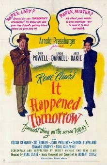
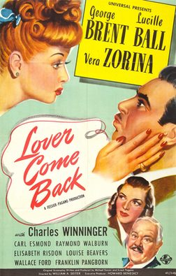
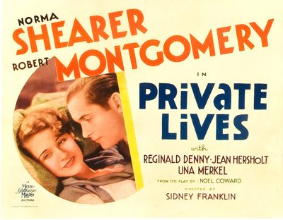

THE STANFORD THEATRE
Now Showing
·
Upcoming
·
Past
·
Search
October 30, 1998 - January 3, 1999
Romantic Comedy Series
28 bills
October 30
Top Hat (1935)
101 min
The Philadelphia Story (1940)
108 min
October 31, November 1
Top Hat (1935)
101 min
The Philadelphia Story (1940)
108 min
November 2, 3
Top Hat (1935)
101 min
The Philadelphia Story (1940)
108 min
November 6
The Thin Man (1934)
91 min
Bachelor Mother (1939)
83 min
November 7, 8
The Thin Man (1934)
91 min
Bachelor Mother (1939)
83 min
November 9, 10
The Thin Man (1934)
91 min
Bachelor Mother (1939)
83 min
November 11 - 13
Trouble in Paradise (1932)
83 min
Monte Carlo (1930)
94 min
November 14, 15
Shall We Dance (1937)
109 min
The Awful Truth (1937)
87 min
November 16, 17
Shall We Dance (1937)
109 min
The Awful Truth (1937)
87 min
November 18 - 20
The More the Merrier (1943)
104 min
The Whole Town's Talking (1926)
November 21, 22
My Man Godfrey (1936)
94 min
The Gay Divorcee (1934)
107 min
November 23, 24
My Man Godfrey (1936)
94 min
The Gay Divorcee (1934)
107 min
November 25 - 27
The Bishop's Wife (1947)
109 min
My Favorite Wife (1940)
89 min
November 28, 29
It Happened One Night (1934)
105 min
His Girl Friday (1940)
90 min
November 30, December 1
It Happened One Night (1934)
105 min
His Girl Friday (1940)
90 min
December 2 - 4

It Happened Tomorrow (1944)
85 min
Christmas in July (1940)
67 min
December 5, 6
Pillow Talk (1959)
102 min

Lover Come Back (1946)
90 min
December 7, 8
Pillow Talk (1959)
102 min
Lover Come Back (1946)
90 min
December 9, 10
The Animal Kingdom (1932)
71 min

Private Lives (1931)
December 11
The Shop Around the Corner (1940)
99 min
Miracle on 34th Street (1947)
96 min
December 12, 13
The Shop Around the Corner (1940)
99 min
Miracle on 34th Street (1947)
96 min
December 14 - 18
The Shop Around the Corner (1940)
99 min
Miracle on 34th Street (1947)
96 min
December 19, 20
The Shop Around the Corner (1940)
99 min
Miracle on 34th Street (1947)
96 min
December 21 - 23
The Shop Around the Corner (1940)
99 min
Miracle on 34th Street (1947)
96 min
December 26, 27
Meet Me in St. Louis (1944)
113 min
Our Vines Have Tender Grapes (1945)
105 min
December 28 - 31
Meet Me in St. Louis (1944)
113 min
Our Vines Have Tender Grapes (1945)
105 min
January 1, 1999 - January 2
Around the World in 80 Days (1956)
184 min
January 3, 1999
Around the World in 80 Days (1956)
184 min